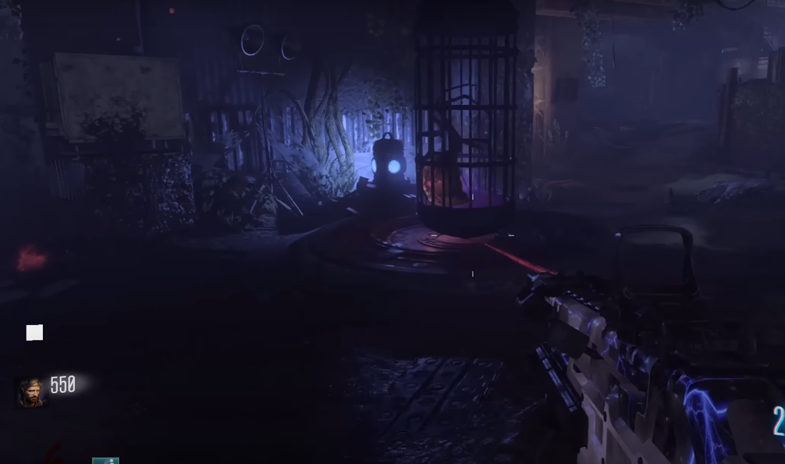
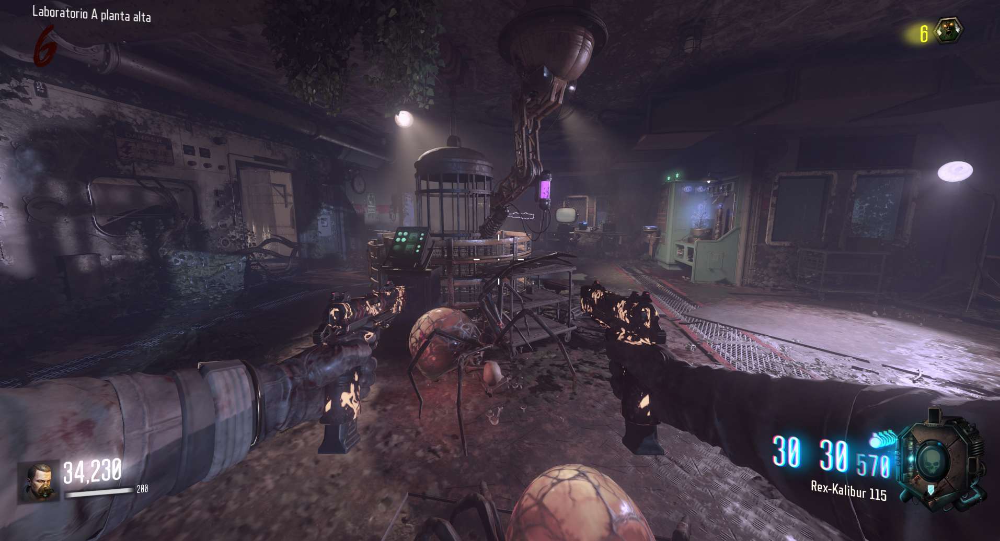
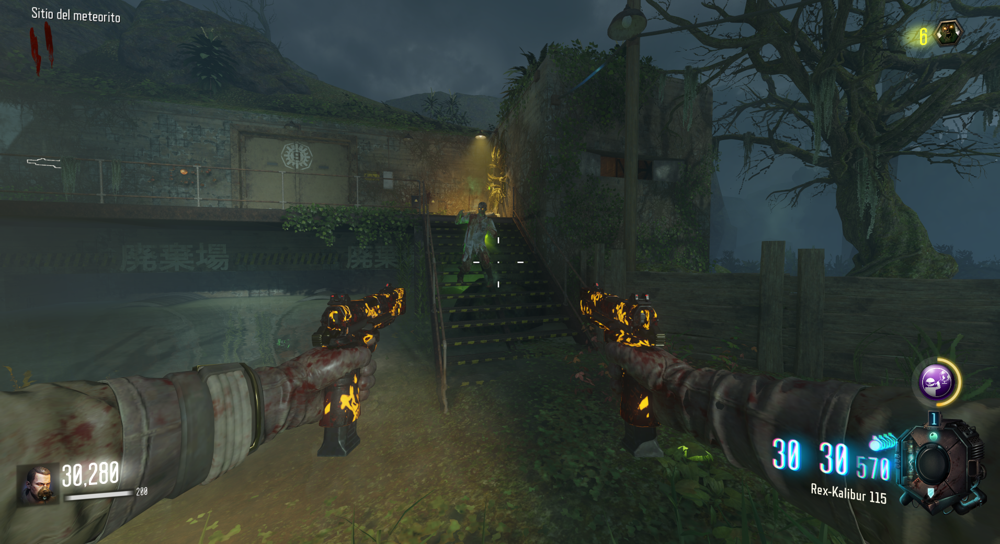
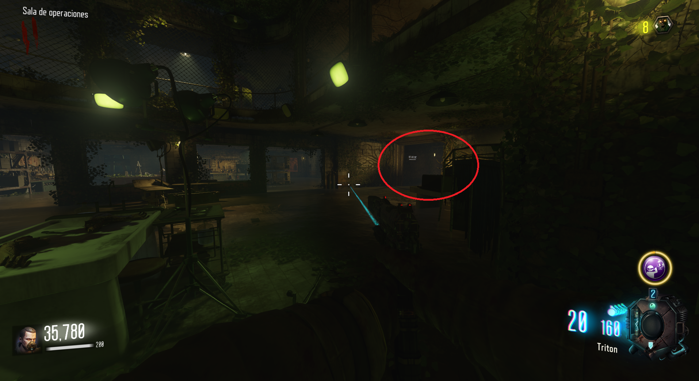
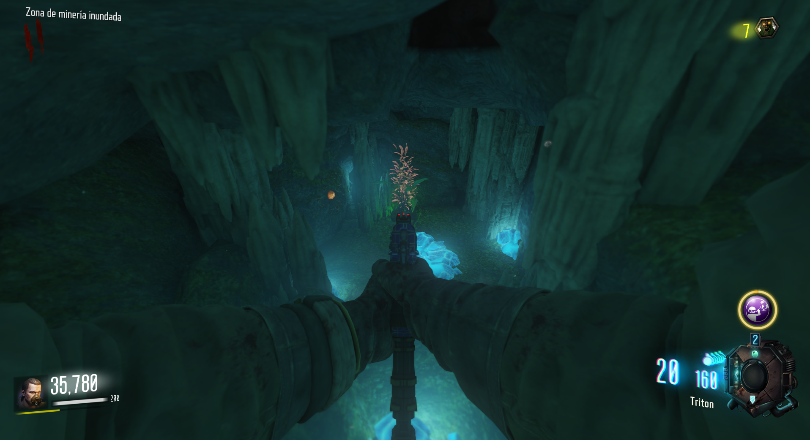
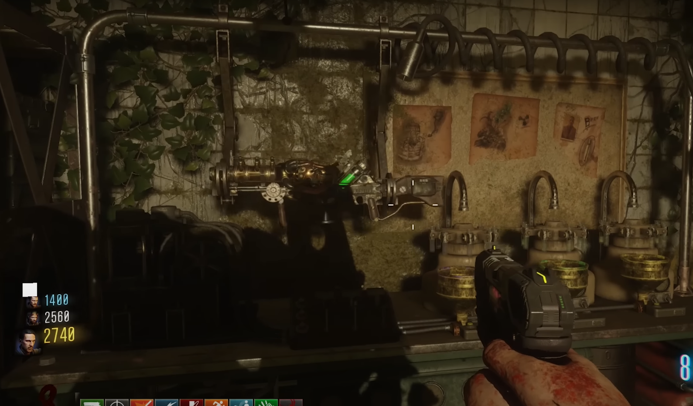

Primera parte (Veneno de araña):
Ir al laboratorio A, bajar la jaula, atraer una araña a su interior, subir la jaula y extraer el venono.


Segunda parte (Zombie verde):
En el pantano detrás del laboratorio B, aparecerá un zombie con un brillo verde. Al matarlo nos dará la segunda parte.

Tercera parte (Planta submarina):
Tendremos que entrar a la parte más profunda del bunker y , según bajamos las escaleras, abrir la sala de la derecha. Esta nos llevará a una gruta submarina y al final de ella encontraremos una planta que podremos recolectar.


Fabricar:
Iremos a la planta baja del búnker y, bajando las escaleras al fondo a la izquierda fabricaremos la KT-4
